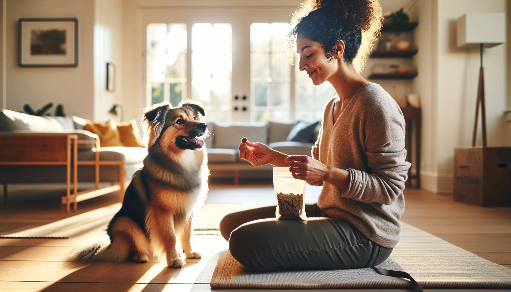

If you have ever felt like dog training requires hours a day, perfect timing, and endless patience, here is the good news: it does not. In fact, one of the most effective ways to build a well-mannered, confident dog is through short, consistent practice. A simple 15-minute daily training routine can dramatically improve your dog’s focus, responsiveness, and behavior at home and in the real world.
This approach works for new puppy parents, rescue adopters, and owners of adult dogs who need a reset. It is science-backed, realistic for busy schedules, and easy to adapt to different ages, breeds, and energy levels. Dogs learn through repetition, reinforcement, and clear communication. That means a few intentional minutes each day often outperform one long session once a week.
Below, you will find a practical 15-minute dog training routine that helps strengthen your bond, teach useful life skills, and create calm, reliable behavior over time.
Dogs learn best in short sessions. Their attention spans, especially as puppies or newly adopted rescue dogs, are limited. Brief training periods reduce frustration, keep motivation high, and help your dog end on a success. This matters because learning is strongest when your dog is engaged, not overwhelmed.
From a behavior science perspective, frequent reinforcement builds habits. When you reward the behaviors you want every day, those behaviors become more likely to happen again. This is the foundation of positive reinforcement training. Instead of waiting for problems to appear, you proactively teach your dog what to do.
A daily routine also creates predictability. Predictability lowers stress for many dogs, especially rescues adjusting to a new home. When your dog knows how to earn rewards and what is expected, confidence grows. Over time, that confidence often shows up as better leash walking, improved recall, calmer greetings, and fewer unwanted behaviors.
The key is to divide the session into small, focused blocks. You do not need fancy equipment. Keep a few treats ready, choose a quiet space, and bring a calm, upbeat attitude.
This structure gives you a balanced routine that supports obedience, emotional regulation, and relationship-building all at once.
Before asking your dog to do anything, teach them that paying attention to you is rewarding. Say your dog’s name once. When they look at you, mark the behavior with a cheerful “yes” or a clicker, then give a treat. Repeat several times. This simple game builds the habit of checking in.
You can also reward offered eye contact. Stand quietly with treats ready. The moment your dog looks at you on their own, mark and reward. For puppies, this may happen quickly. For rescue dogs or distracted adolescents, be patient. Attention is a skill, and like any skill, it improves with repetition.
This warm-up matters because engagement is the foundation of all future training. A dog who notices you is much easier to guide than a dog who is mentally elsewhere.
Once your dog is tuned in, spend a few minutes on core cues. These are not just party tricks. They are tools that help your dog succeed in daily situations.
Keep repetitions short and successful. Reward generously, especially when teaching a new dog or reinforcing a behavior in a new environment. If your dog struggles, make the task easier rather than repeating the cue louder or more often. Clear communication always beats pressure.
For puppies, focus on one or two simple behaviors per session. For adult dogs, rotate through a few cues to keep things fresh. For rescues, prioritize trust and clarity over precision. Progress comes faster when your dog feels safe and understood.
One reason some dogs seem “trained” at home but not in daily life is that they have learned cues in isolation without practicing manners in context. Your 15-minute routine should include life skills that directly reduce common frustrations.
For example, teach your dog to wait briefly before going through a door. Ask for a sit, reach toward the handle, and reward calmness. If your dog pops up, simply reset and try again. This teaches impulse control in a practical way.
You can also teach a mat settle. Toss a treat onto a mat or bed, let your dog step onto it, and reward calm posture. Over time, this becomes a powerful tool for mealtimes, visitors, and evenings when you want your dog to relax.
These manners are especially valuable for rescue adopters. Many newly adopted dogs need help learning how to live comfortably in a home. Small routines create structure, and structure helps behavior improve.
Dogs do not generalize well automatically. A dog who can sit in the kitchen may forget everything outdoors. That is why movement-based training belongs in your daily routine.
Practice a few steps of loose-leash walking indoors or in the yard. Reward your dog for staying near you, checking in, and keeping the leash slack. This teaches your dog that walking with you is worth it. If your dog pulls, stop moving and wait for slack before continuing. Pulling should not be what gets them forward.
Recall games are another high-value use of your time. Move a few feet away, say your dog’s name followed by “come,” and reward enthusiastically when they arrive. Make it fun. For shy rescues, keep your body language soft and inviting. For energetic puppies, use playful movement and excited praise.
Reliable recall is built through many successful repetitions, not by calling your dog only when playtime ends. The daily routine helps you create that positive history.
Great dog training is not just about obedience. It is also about emotional skills. Confidence and impulse control help dogs cope with the world more calmly.
Try a simple “leave it” exercise by placing a treat in your closed hand. Wait quietly. When your dog stops pawing or nosing at your hand, mark and reward from your other hand. This teaches your dog that self-control makes rewards happen.
You can also include gentle handling exercises. Briefly touch a paw, ear, or collar, then reward. This is especially helpful for puppies learning to accept grooming and for rescue dogs building trust around human touch.
If your dog is nervous, introduce mild, manageable novelty during this time, such as walking over a blanket, seeing a cardboard box, or hearing a low-volume household sound. Pair new experiences with treats and calm praise. The goal is not to force your dog through fear, but to build positive associations at a level they can handle.
Even the best routine works better when you avoid a few common pitfalls.
Remember, consistency matters more than perfection. If you miss a day, just start again the next day. The routine is meant to support real life, not add stress to it.
For puppies: keep things playful, use tiny treats, and focus on attention, handling, recall, and settling. Young puppies benefit from many micro-successes.
For rescue dogs: prioritize trust, predictability, and low-pressure learning. Use food, distance, and patience to help your dog feel secure.
For adult dogs: revisit foundations without assuming they already know them everywhere. Many behavior problems improve when the basics become stronger.
No matter your dog’s age or background, the formula stays the same: short sessions, clear markers, generous reinforcement, and consistent practice.
The most powerful dog training routine is not the most complicated one. It is the one you can actually do every day. Fifteen focused minutes can improve attention, strengthen communication, and teach the life skills that make living with your dog easier and more enjoyable.
Whether you are raising a puppy, helping a rescue settle in, or polishing the manners of an adult dog, this routine gives you a practical path forward. Start small. Reward often. Keep sessions upbeat. Over time, those minutes add up to a dog who listens better, feels more confident, and understands how to succeed in your home.
Get our full Dog Training eBook series — new titles added weekly.